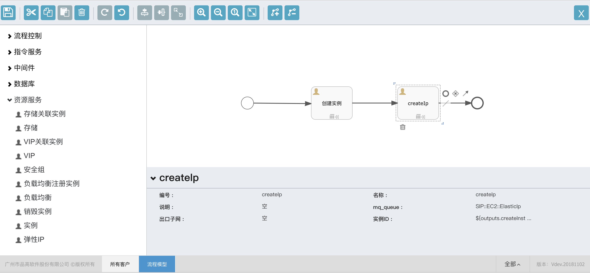

设计一个最简单的流程
按照以下步骤设计一个可用的模型
- 开始事件：从流程控制中拖动一个开始事件，到画布中
- 从资源服务拖动一个实例，填写名称和编号为
createInstance,用来创建云主机 - 从资源服务中拖动一个弹性IP，在弹性IP的实例ID属性中输入
${outputs.createInstance.instanceId}，用来使得新创建的IP，绑定到创建的实例中 - 从流程控制中拖动一个结束事件

编辑结束后，关闭设计器，如果是在流程模型菜单中编辑的模型，需要手工点击发布按钮，才能生效；部署方案中编辑的模型，在关闭设计器时，会自动发布。